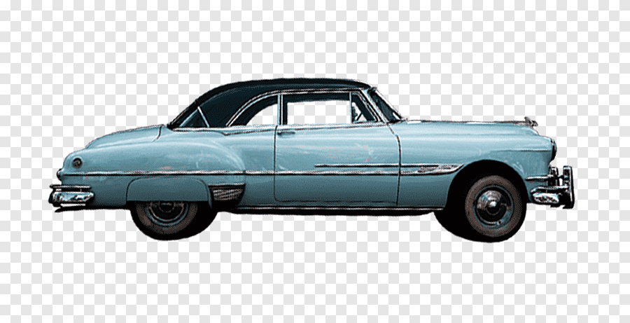

Los autos clásicos son vehículos con historia y carácter. Representan una época dorada de la ingeniería automotriz, destacando por su diseño, potencia y exclusividad.
Modelos icónicos como el Ford Mustang de 1967, el Chevrolet Camaro de 1969 o el Porsche 911 de 1973 siguen capturando la admiración de coleccionistas y entusiastas en todo el mundo.
Los muscle cars son autos potentes de origen estadounidense con grandes motores V8 y un diseño agresivo.
Algunos ejemplos destacados son:
Estos autos destacan por su diseño elegante, tecnología avanzada para su época y un alto nivel de rendimiento.
Algunos modelos icónicos son:
Estos vehículos representaban el lujo y la exclusividad de su tiempo, con interiores sofisticados y un desempeño refinado.
Algunos ejemplos son:
Los autos clásicos no solo son una pasión para los coleccionistas, sino también una inversión valiosa y un testimonio del arte automotriz.
